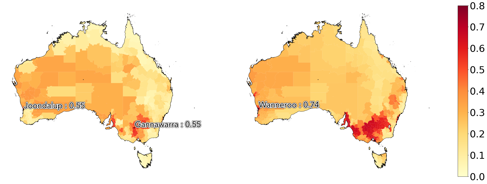

Climate Data Guide - Cyclones
Hazard Description
Tropical cyclones, also referred to as hurricanes and typhoons, are one of the costliest natural disasters. Since 1980, tropical cyclones in the U.S. have caused $997 billion in damages (NOAA), exceeding damages from all other weather disasters. Cyclone impacts can be widespread, including coastal and inland flooding and wind damage. These damages can affect livelihoods, assets, critical infrastructure, and economic activity.
Methodologies
Future Cyclone Projections
We quantify current and forward-looking cyclone exposure by focusing on the probability of cyclones. This value represents the expected number of cyclones over a year, of any intensity.
For forward-looking cyclone exposure, Sust Global combines the latest CMIP6-based cyclone track simulations with our proprietary bias-correction methodology to enable more accurate assessment of local exposure. The CMIP6 cyclone tracks are unique because they are based on high-resolution simulations specifically designed to enable more reliable assessment of climate risk from weather phenomena like tropical cyclones. These simulations are only achievable due to recent advancements in supercomputing power.
The CMIP6-based cyclone track simulations are drawn from research led by Dr. Malcolm Roberts of the UK Met Office (technical reference). The simulations are based on CMIP6 HighResMIP simulations with resolutions as high as 25km. The CMIP6 HighResMIP project is co-chaired by Roberts. The authors applied two different cyclone track algorithms to determine when an input set of CMIP6 oceanic and atmospheric conditions over time and space constitutes a high likelihood of a tropical cyclone track.
Observed tropical cyclones
We use cyclone tracks from the International Best Track Archive for Climate Stewardship (IBTrACS). The IBTrACS archive combines tropical cyclone datasets from global agencies and harmonizes them into a single dataset. It is endorsed by the World Meteorological Organization as the official data source for cyclone track data. For observed tropical cyclones, we filter points to only include Category 3, 4, and 5 storm points. We then assume a constant ‘impact radius’ of 150 miles/ 241km.
Risk Scoring
Where did we benchmark cyclones?
Known Limitations
Future cyclones, particularly the impact of climate change on frequency and intensity, is uncertain. This is a very active area of research in the climate resilience community. For more information, see this Atlantic article on the state of cyclone science.
Sample Assessment

Fig D5: United States Counties, Projected mean annual cyclone risk exposure over 1980-2010 and 2022-2052 with SSP5-RCP8.5 scenario.
| State | County Name | Score (1980-2020) | Score (2022-2052) | Percent Change |
|---|---|---|---|---|
| North Carolina | Dare | 0.31 | 0.3 | -4 |
| North Carolina | Hyde | 0.29 | 0.28 | -6 |
| North Carolina | Carteret | 0.28 | 0.36 | -9 |
| North Carolina | Tyrell | 0.24 | 0.25 | 3 |
| North Carolina | Pamilco | 0.27 | 0.25 | -8 |
Table 3A: US Counties with top cyclone exposure over the upcoming 30 years

Fig D6: Indian Towns, Projected mean annual cyclone risk exposure over 1980-2010 and 2022-2052 with SSP5-RCP8.5 scenario.
| Region Name | Score (1980-2020) | Score (2022-2052) | Percent Change |
|---|---|---|---|
| Puri | 0.25 | 0.23 | -7 |
| Srikakulam | 0.27 | 0.25 | -7 |
| Visakhapatnam | 0.28 | 0.26 | -7 |
| Vizianagaram | 0.26 | 0.24 | -9 |
Table 3B: Indian Towns with top cyclone exposure over the upcoming 30 years
Data Sources
References
- The Atlantic - Honestly? The Link Between Climate Change and Hurricanes Is Complicated
- More Future Cyclone Science…
Old stuff
Indicators
Water Stress
Description
Water is a requirement for societal development and progress. Water availability, or in its absence water scarcity, plays a critical role across sectors, including manufacturing, mining, agriculture, and electricity generation. Climate change coupled with increasing demand will have substantial impacts on water availability across the globe. Rigorous, high resolution water supply and demand data is therefore needed to enable reliable assessment of companies’ water scarcity exposure directly and throughout their supply chains. Projections of future water availability can help companies and investors prepare for the complex economic and social challenges related to water stress.
Sample Assessment

Fig D9: United States Counties, Projected mean annual water stress risk exposure over 1980-2010 and 2022-2052 with SSP5-RCP8.5 scenario.
| State | County Name | Score (1980-2020) | Score (2022-2052) | Percent Change |
|---|---|---|---|---|
| Arizona | Yuma | 0.56 | 0.91 | 63 |
| California | Imperial | 0.57 | 0.89 | 55 |
| Arizona | La Paz | 0.37 | 0.84 | 126 |
| Washington | Grant | 0.43 | 0.81 | 86 |
| Arizona | Maricopa | 0.55 | 0.79 | 42 |
Table 5A: US Counties with top water stress exposure

Fig D10: Australian Towns, Projected mean annual water stress risk exposure over 1980-2010 and 2022-2052 with SSP5-RCP8.5 scenario.
| State | Region Name | Score (1980-2020) | Score (2022-2052) | Percent Change |
|---|---|---|---|---|
| Western Australia | Wanneroo | 0.54 | 0.74 | 39 |
| Western Australia | Joondalup | 0.55 | 0.74 | 36 |
| Western Australia | Cockburn | 0.35 | 0.73 | 110 |
| Western Australia | Bayswater | 0.34 | 0.73 | 114 |
| Western Australia | Cambridge | 0.48 | 0.73 | 54 |
Table 5B: Australian towns with top water stress exposure over the upcoming 30 years
Indicators
We provide 4 indicators: historic water stress, projected droughts, projected water stress score, projected unified water stress.
- Water stress score indicator: We model current and forward-looking water stress scores using the World Resource Institute’s Aqueduct model. The state-of-the-art Aqueduct model has been extensively used by researchers in academia and industry to assess portfolio water risk. The water stress score is indicative of competition for local water resources. It is calculated as the ratio of water withdrawal to renewable water availability.
- Drought indicator: This indicator is based on a drought index derived from CMIP6 monthly simulations of precipitation and temperature. The drought index, also referred to as the standardized precipitation evapotranspiration index, represents the magnitude of precipitation deficits (negative magnitude) or surplus (positive magnitude) over the preceding 12-month period, after accounting for temperature-driven effects on evapotranspiration. Our selection of a 12-month period reflects long-term precipitation patterns and better relates to reservoirs, groundwater, and streamflow.
- Unified water stress indicator: This indicator combines the water stress score and the drought indicator to one single indicator for water stress, using a weighted mean, with weights derived from the methodology designed by the World Resources Institute in their Global Aqueduct Methodology (Page 35, Table 3). This provides a comparable 0.0 to 1.0 range to indicate exposure to water stress.
- Historic water stress indicator: We use the same methodology as the unified water stress indicator, except with observed rather than modeled datasets of water stress and drought.
Water stress scores account for the availability and consumption of water at the specific location. The drought indicator accounts for environmental variables that create acute water shortage over a period of time. Both are chronic physical climate hazard indicators.
Our water stress indicator is based on the world leading WRI water stress methodology (link) and our drought indicator is based on the latest frontier climate research from the CMIP6(link).
Data Usage
A key avenue for mitigating water stress not considered in the modeling framework is the transport of water between watersheds. Such transport can help meet water demand, but it comes at a cost. Transporting water requires large amounts of energy, increasing greenhouse gas emissions, along with the development of transportation infrastructure. Water transport also carries with it a host of geopolitical and equity considerations.
- Water stress scores are more suitable for use for assessments of impact from the changing climate to human water needs
- Drought indicator is most useful for water stress impacts to agriculture and commodities
- The unified water stress indicator is most useful across generic use cases